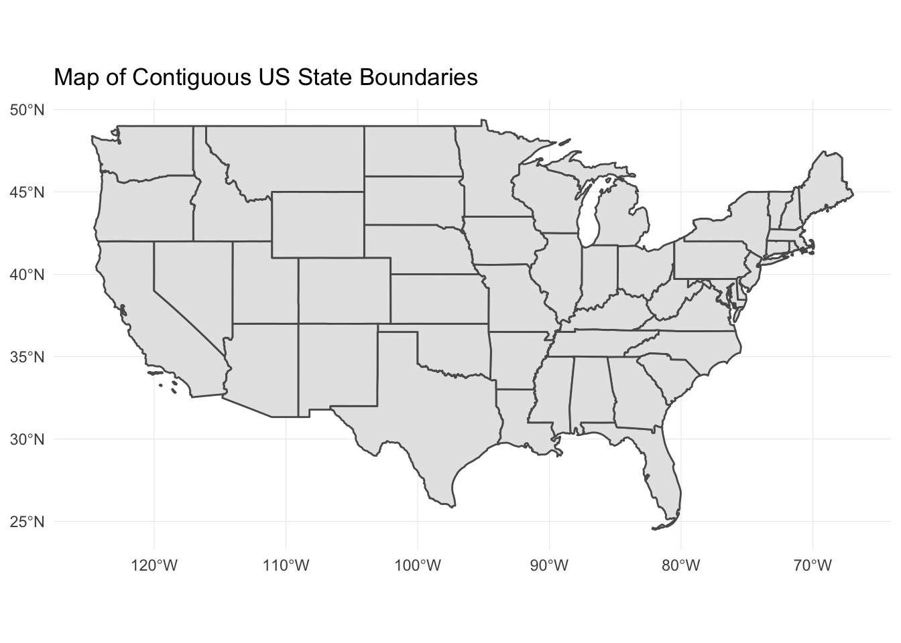
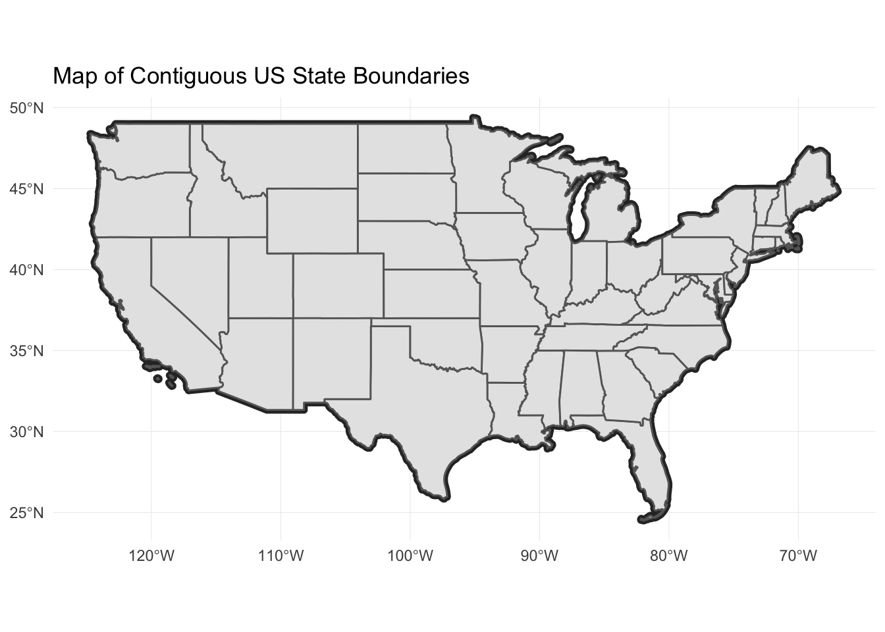
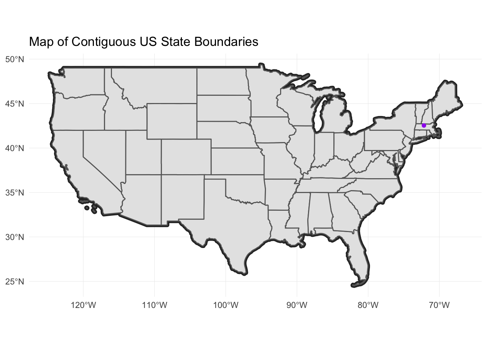
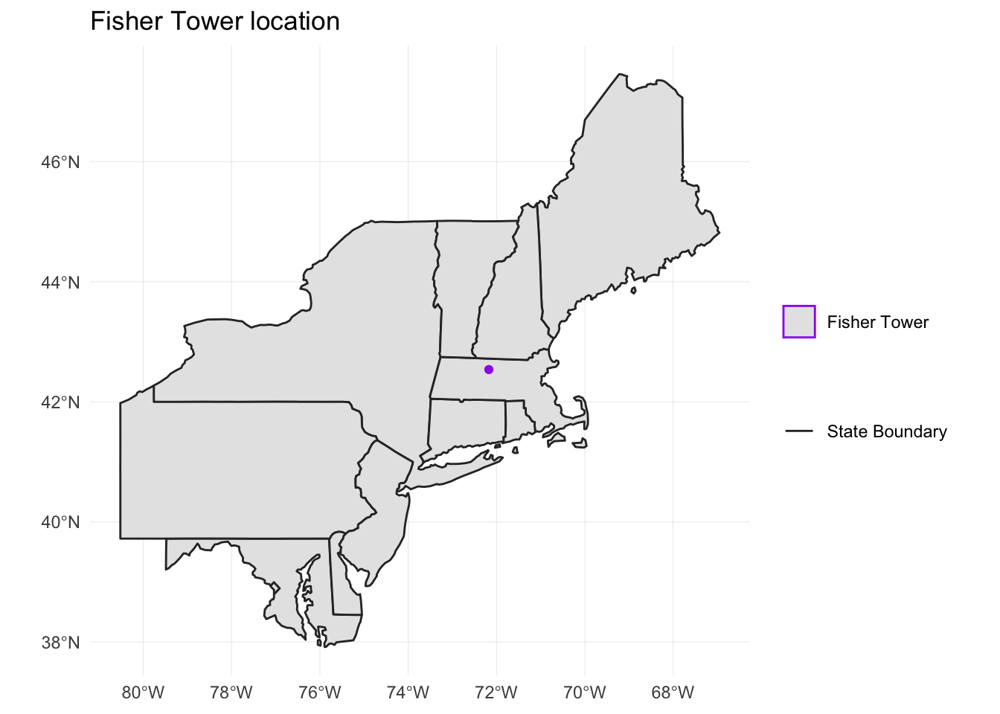
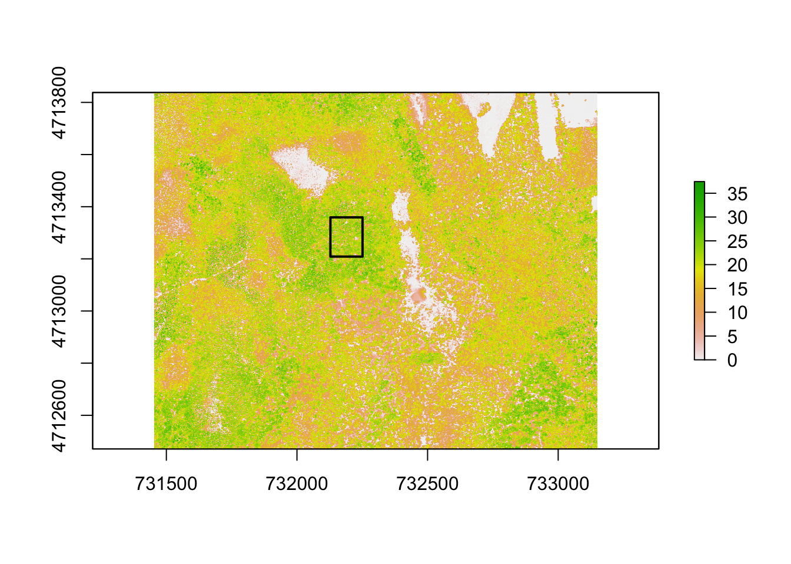
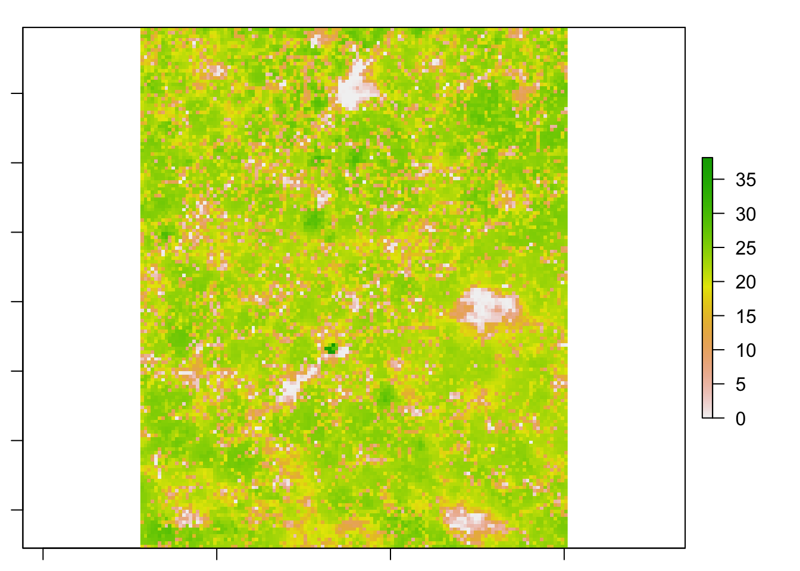

## Loading required package: sp## Linking to GEOS 3.6.1, GDAL 2.1.3, PROJ 4.9.3## Registered S3 methods overwritten by 'ggplot2':
## method from
## [.quosures rlang
## c.quosures rlang
## print.quosures rlang## ── Attaching packages ──────────────────────────────────── tidyverse 1.2.1 ──## ✔ ggplot2 3.1.1 ✔ purrr 0.3.2
## ✔ tibble 2.1.3 ✔ dplyr 0.8.1
## ✔ tidyr 0.8.3 ✔ stringr 1.4.0
## ✔ readr 1.3.1 ✔ forcats 0.4.0## ── Conflicts ─────────────────────────────────────── tidyverse_conflicts() ──
## ✖ tidyr::extract() masks raster::extract()
## ✖ dplyr::filter() masks stats::filter()
## ✖ dplyr::lag() masks stats::lag()
## ✖ dplyr::select() masks raster::select()## Reading layer `HARVtower_UTM18N' from data source `/Users/darya/Dropbox (Sydney Uni)/Training/19_09_11_ResBaz/19_01_11_ResBazGIS/data/NEON-DS-Site-Layout-Files/HARV/HARVtower_UTM18N.shp' using driver `ESRI Shapefile'
## Simple feature collection with 1 feature and 14 fields
## geometry type: POINT
## dimension: XY
## bbox: xmin: 732183.2 ymin: 4713265 xmax: 732183.2 ymax: 4713265
## epsg (SRID): 32618
## proj4string: +proj=utm +zone=18 +datum=WGS84 +units=m +no_defs## Reading layer `HarClip_UTMZ18' from data source `/Users/darya/Dropbox (Sydney Uni)/Training/19_09_11_ResBaz/19_01_11_ResBazGIS/data/NEON-DS-Site-Layout-Files/HARV/HarClip_UTMZ18.shp' using driver `ESRI Shapefile'
## Simple feature collection with 1 feature and 1 field
## geometry type: POLYGON
## dimension: XY
## bbox: xmin: 732128 ymin: 4713209 xmax: 732251.1 ymax: 4713359
## epsg (SRID): 32618
## proj4string: +proj=utm +zone=18 +datum=WGS84 +units=m +no_defsSome reasons for data being in different CRSs include:
There are R packages for accessing US census data, and Australian census data - eechidna.
state_boundary_US <- st_read("data/NEON-DS-Site-Layout-Files/US-Boundary-Layers/US-State-Boundaries-Census-2014.shp")## Reading layer `US-State-Boundaries-Census-2014' from data source `/Users/darya/Dropbox (Sydney Uni)/Training/19_09_11_ResBaz/19_01_11_ResBazGIS/data/NEON-DS-Site-Layout-Files/US-Boundary-Layers/US-State-Boundaries-Census-2014.shp' using driver `ESRI Shapefile'
## Simple feature collection with 58 features and 10 fields
## geometry type: MULTIPOLYGON
## dimension: XYZ
## bbox: xmin: -124.7258 ymin: 24.49813 xmax: -66.9499 ymax: 49.38436
## epsg (SRID): 4326
## proj4string: +proj=longlat +datum=WGS84 +no_defsstate_boundary_US %>%
ggplot() +
geom_sf() +
ggtitle("Map of Contiguous US State Boundaries") +
coord_sf()
Add a boundary layer of the United States to our map - to make it look nicer.
country_boundary_US <- st_read("data/NEON-DS-Site-Layout-Files/US-Boundary-Layers/US-Boundary-Dissolved-States.shp")## Reading layer `US-Boundary-Dissolved-States' from data source `/Users/darya/Dropbox (Sydney Uni)/Training/19_09_11_ResBaz/19_01_11_ResBazGIS/data/NEON-DS-Site-Layout-Files/US-Boundary-Layers/US-Boundary-Dissolved-States.shp' using driver `ESRI Shapefile'
## Simple feature collection with 1 feature and 9 fields
## geometry type: MULTIPOLYGON
## dimension: XYZ
## bbox: xmin: -124.7258 ymin: 24.49813 xmax: -66.9499 ymax: 49.38436
## epsg (SRID): 4326
## proj4string: +proj=longlat +datum=WGS84 +no_defsIf we specify a thicker line width using size = 2 for the border layer, it will make our map pop! We will also manually set the colors of the state boundaries and country boundaries.
country_boundary_US %>%
ggplot() +
geom_sf(color = "gray18", size = 2) +
geom_sf(data = state_boundary_US, color = "gray40") +
ggtitle("Map of Contiguous US State Boundaries") +
coord_sf() Next, let’s add the location of a flux tower where our study area is. As we are adding these layers, take note of the CRS of each object.
We saw in an earlier episode that when working with raster data in different CRSs, we needed to convert all objects to the same CRS. We can do the same thing with our vector data - however, we don’t need to! When using the ggplot2 package, ggplot automatically converts all objects to the same CRS before plotting. This means we can plot our three data sets together without doing any conversion:
country_boundary_US %>%
ggplot() +
geom_sf(size = 2, color = "gray18") +
geom_sf(data = state_boundary_US, color = "gray40") +
geom_sf(data = point_HARV, shape = 19, color = "purple") +
ggtitle("Map of Contiguous US State Boundaries") +
coord_sf()
But not all libraries are this convenient, and it doesn’t help us with vector math!
Let’s get them into the same CRS:
st_crs(point_HARV)## Coordinate Reference System:
## EPSG: 32618
## proj4string: "+proj=utm +zone=18 +datum=WGS84 +units=m +no_defs"st_crs(state_boundary_US)## Coordinate Reference System:
## EPSG: 4326
## proj4string: "+proj=longlat +datum=WGS84 +no_defs"st_crs(country_boundary_US)## Coordinate Reference System:
## EPSG: 4326
## proj4string: "+proj=longlat +datum=WGS84 +no_defs"To convert:
point_HARV_4326 <- st_transform(point_HARV, 4326)
st_transform(point_HARV, st_crs(state_boundary_US))## Simple feature collection with 1 feature and 14 fields
## geometry type: POINT
## dimension: XY
## bbox: xmin: -72.17266 ymin: 42.5369 xmax: -72.17266 ymax: 42.5369
## epsg (SRID): 4326
## proj4string: +proj=longlat +datum=WGS84 +no_defs
## Un_ID Domain DomainName SiteName Type Sub_Type Lat
## 1 A 1 Northeast Harvard Forest Core Advanced Tower 42.5369
## Long Zone Easting Northing Ownership County
## 1 -72.17266 18 732183.2 4713265 Harvard University, LTER Worcester
## annotation geometry
## 1 C1 POINT (-72.17266 42.5369)st_transform(point_HARV, as.character(st_crs(state_boundary_US))[2])## Simple feature collection with 1 feature and 14 fields
## geometry type: POINT
## dimension: XY
## bbox: xmin: -72.17266 ymin: 42.5369 xmax: -72.17266 ymax: 42.5369
## epsg (SRID): 4326
## proj4string: +proj=longlat +datum=WGS84 +no_defs
## Un_ID Domain DomainName SiteName Type Sub_Type Lat
## 1 A 1 Northeast Harvard Forest Core Advanced Tower 42.5369
## Long Zone Easting Northing Ownership County
## 1 -72.17266 18 732183.2 4713265 Harvard University, LTER Worcester
## annotation geometry
## 1 C1 POINT (-72.17266 42.5369)# Create a map of the North Eastern United States as follows:
# 1. Import and plot Boundary-US-State-NEast.shp. Adjust line width as necessary.
# 2. Layer the Fisher Tower (in the NEON Harvard Forest site) point location point_HARV onto the plot.
# 3. Add a title.
# 4. Add a legend that shows both the state boundary (as a line) and the Tower location point.
NE.States.Boundary.US <- st_read("data/NEON-DS-Site-Layout-Files/US-Boundary-Layers/Boundary-US-State-NEast.shp")## Reading layer `Boundary-US-State-NEast' from data source `/Users/darya/Dropbox (Sydney Uni)/Training/19_09_11_ResBaz/19_01_11_ResBazGIS/data/NEON-DS-Site-Layout-Files/US-Boundary-Layers/Boundary-US-State-NEast.shp' using driver `ESRI Shapefile'
## Simple feature collection with 12 features and 9 fields
## geometry type: MULTIPOLYGON
## dimension: XYZ
## bbox: xmin: -80.51989 ymin: 37.91685 xmax: -66.9499 ymax: 47.45716
## epsg (SRID): 4326
## proj4string: +proj=longlat +datum=WGS84 +no_defsNE.States.Boundary.US %>%
ggplot() +
geom_sf(aes(color ="color"), show.legend = "line") +
scale_color_manual(name = "", labels = "State Boundary", values = c("color" = "gray18")) +
geom_sf(data = point_HARV_4326, aes(shape = "shape"), color = "purple") +
scale_shape_manual(name = "", labels = "Fisher Tower", values = c("shape" = 19)) +
ggtitle("Fisher Tower location") +
theme(legend.background = element_rect(color = NA)) +
coord_sf()
CHM_HARV_Cropped <- crop(x = CHM_HARV, y = as(aoi_boundary_HARV, "Spatial"))plot(CHM_HARV)
plot(aoi_boundary_HARV, add=TRUE,lwd=2,col=NA)
plot(CHM_HARV_Cropped)
mean_tree_height_tower <- raster::extract(x = CHM_HARV, y = as(point_HARV, "Spatial"), buffer = 20, fun = mean)